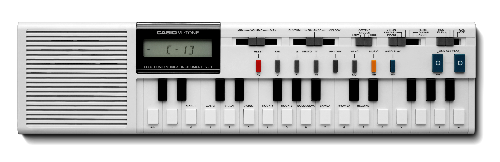
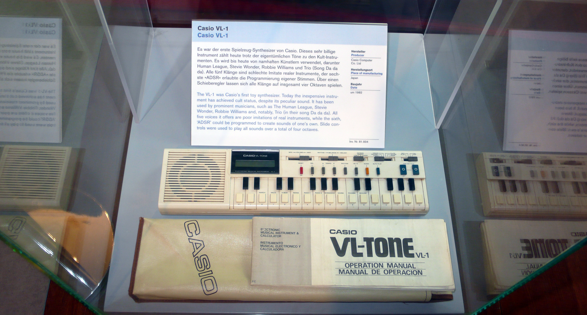

Casio VL-1 / VL-Tone
The calculator that became a musical instrument — and vice versa

Overview
The Casio VL-1, also sold as the VL-Tone and rebranded by RadioShack as the Realistic Concertmate 200, is a landmark in modal consumer electronics design. Released internationally in 1981 for $69.95, it combined a 4-function calculator with a monophonic digital synthesizer in a single pocket-sized device. Its defining HCI feature is the dual-labeled 29-button keypad: each key serves as both a calculator digit/operator AND a musical note, with a physical mode switch toggling the entire keyboard between two completely different functional worlds. The VL-1 was also arguably the first affordable commercial digital synthesizer, featuring 5 preset voices, 5 hidden voices accessible only via ADSR codes, 10 rhythm patterns, and a 100-note step sequencer — all programmed through the calculator keypad.
Deep dive
The VL-1's 29-button membrane keypad is the heart of its HCI story. Every key is physically dual-labeled: the number 1 key is also 'Do', 2 is 'Re', the addition key is also 'Sol', and so on. A physical slider switch selects between Calculator (CAL) and Play/Record modes. In calculator mode, the keypad performs arithmetic and the 8-character LCD shows numbers. In play mode, the same keys produce musical notes and the LCD shows note names. An octave switch extends range to 2.5 octaves. This mode-dependent keypad — where a single physical switch fundamentally rewires the meaning of every input — is one of consumer electronics' purest examples of modal interface design.
ADSR synthesis parameters on the VL-1 are entered not with knobs or sliders, but as an 8-digit numeric code typed into the calculator. Each digit position encodes a specific parameter: the first digit selects waveform (9 types including Piano, Flute, Fantasy, Violin, and Guitar), digits 2-8 control Attack, Decay, Sustain Level, Sustain Time, Release Time, Vibrato, and Tremolo respectively. For example, the code '90099914' produces waveform 9 with rapid attack and heavy vibrato. This mapping of sound design onto numeric abstraction — turning timbre into a number you type — created an unusual creative constraint that musicians learned to exploit.
The VL-1 includes a 100-note monophonic step sequencer programmed note-by-note using the musical keypad. A dedicated 'One Key Play' button triggers sequential playback — press once to advance one note at a time, or hold for continuous playback at the tempo set by the rhythm section. The sequencer plus 10 preset rhythms (using only 3 PCM drum sounds internally named 'Po', 'Pi', and 'Sha') made the VL-1 a complete lo-fi music production tool.
The VL-1 achieved iconic status through German band Trio's 1982 hit 'Da Da Da', which used the Rock-1 rhythm preset and Piano voice as its core instrumental track. The Human League used it on their landmark album 'Dare' (1981). Its deliberately cheap, kitsch sound became an aesthetic choice — musicians embraced its limitations, creating a tradition of 'toy instrument' music that continues today. The VL-1 exemplifies constrained creativity: limitations in the interface produced unexpected cultural outcomes. A VST software emulator (PolyValens VL1) keeps the sound alive in modern production.
Team & pioneers
- Casio Computer Co., Ltd.. Japanese electronics manufacturer; designed and manufactured the VL-1
- RadioShack (Tandy Corporation). North American distributor; sold rebranded version as Realistic Concertmate 200
Media
